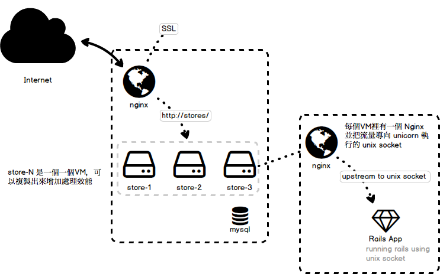

<!DOCTYPE html>
<html>
<head><meta name="generator" content="Hexo 3.8.0">
  <meta charset="utf-8">
  <title>佈署 Rails App 的一些想法 | The name is Alex</title>
  <meta name="viewport" content="width=device-width,initial-scale=1,maximum-scale=1,minimum-scale=1">
  <meta name="description" content="基礎的架構想法是這樣的： SSL 憑證掛在處理流量的 Nginx 上順便讓他做基本的 LoadBalancer。後面就是N個 Rails App 的 VM 來處理LB後的流量。Rails 的 Application 還是用習慣的 unicorn 來執行成 unix socket 讓同台機器上的自己的 Nginx 來把非 static 的 Request 導向 Rails App。  Nginx 上">
<meta name="keywords" content="rails">
<meta property="og:type" content="article">
<meta property="og:title" content="佈署 Rails App 的一些想法">
<meta property="og:url" content="http://alexpacer.github.io/posts/fb91083f/index.html">
<meta property="og:site_name" content="The name is Alex">
<meta property="og:description" content="基礎的架構想法是這樣的： SSL 憑證掛在處理流量的 Nginx 上順便讓他做基本的 LoadBalancer。後面就是N個 Rails App 的 VM 來處理LB後的流量。Rails 的 Application 還是用習慣的 unicorn 來執行成 unix socket 讓同台機器上的自己的 Nginx 來把非 static 的 Request 導向 Rails App。  Nginx 上">
<meta property="og:locale" content="tw">
<meta property="og:image" content="http://alexpacer.github.io/posts/fb91083f/rails-topology.png">
<meta property="og:updated_time" content="2019-10-02T06:26:00.386Z">
<meta name="twitter:card" content="summary">
<meta name="twitter:title" content="佈署 Rails App 的一些想法">
<meta name="twitter:description" content="基礎的架構想法是這樣的： SSL 憑證掛在處理流量的 Nginx 上順便讓他做基本的 LoadBalancer。後面就是N個 Rails App 的 VM 來處理LB後的流量。Rails 的 Application 還是用習慣的 unicorn 來執行成 unix socket 讓同台機器上的自己的 Nginx 來把非 static 的 Request 導向 Rails App。  Nginx 上">
<meta name="twitter:image" content="http://alexpacer.github.io/posts/fb91083f/rails-topology.png">
  <link rel="icon" href="/favicon.ico">
  

  <link rel="stylesheet" href="https://cdnjs.cloudflare.com/ajax/libs/bulma/0.6.1/css/bulma.min.css">
  <link rel="stylesheet" href="https://maxcdn.bootstrapcdn.com/font-awesome/4.7.0/css/font-awesome.min.css">
  <link rel="stylesheet" href="/css/style.css">
  
    <link rel="stylesheet" href="/css/prism.css">
  
  
<script type="application/ld+json">
  {
  "@context": "http://schema.org",
  "@type": "BlogPosting",
  "headline": "佈署 Rails App 的一些想法",
  "name": "佈署 Rails App 的一些想法",
  "datePublished": "2017-06-30T02:31:36.000Z",
  "dateModified": "2019-10-02T06:26:00.386Z",
  "mainEntityOfPage": {
    "@type": "WebPage",
    "@id": "http://alexpacer.github.io/posts/fb91083f/index.html"
  },
  "author": {
    "@type": "Person",
    "name": "Alex Wei",
    "image": "/images/avatar.jpg"
  },
  "publisher": {
    "@type": "Organization",
    "name": "Alex Wei",
    "logo": {
      "@type": "ImageObject",
      "url": "/images/avatar.jpg"
    }
  }
}
</script>

  
  
    <script src="/js/prism.js"></script>
  
  <!-- <link href="/css/prism.css" rel="stylesheet" /> -->
  <link href="/css/prism-line-numbers.css" rel="stylesheet">
<link rel="stylesheet" href="/css/prism-twilight.css" type="text/css"></head>
</html>
<body>
  

  <header class="navbar" role="navigation" aria-label="main navigation">
  <div class="navbar-brand">
    <a href="/" class="navbar-item">
      The name is Alex
    </a>
  </div>
</header>

  <div class="container">
    <div class="columns">
      <div class="main column is-8">
        <article class="post">
  <figure class="post-thumbnail">
    

  </figure>
  <span>2017-06-30
</span>
  <h1 class="title">佈署 Rails App 的一些想法</h1>
  
  <div class="tags">
    
      <a class="tag" href="/tags/rails/">rails</a>
    
  </div>


  <div class="content">
    <p>基礎的架構想法是這樣的：</p>
<p>SSL 憑證掛在處理流量的 Nginx 上順便讓他做基本的 LoadBalancer。後面就是N個 Rails App 的 VM 來處理LB後的流量。Rails 的 Application 還是用習慣的 unicorn 來執行成 unix socket 讓同台機器上的自己的 Nginx 來把非 static 的 Request 導向 Rails App。</p>
<p></p>
<h2 id="Nginx-上的設定"><a href="#Nginx-上的設定" class="headerlink" title="Nginx 上的設定"></a>Nginx 上的設定</h2><pre class=" language-nginx"><code class="language-nginx"><span class="token keyword">upstream</span> store <span class="token punctuation">{</span>
    <span class="token keyword">server</span> <span class="token number">10</span><span class="token punctuation">.</span>x<span class="token punctuation">.</span>x<span class="token number">.1</span><span class="token punctuation">;</span>
    <span class="token keyword">server</span> <span class="token number">10</span><span class="token punctuation">.</span>x<span class="token punctuation">.</span>x<span class="token number">.2</span><span class="token punctuation">;</span>
<span class="token punctuation">}</span>

<span class="token keyword">server</span> <span class="token punctuation">{</span>
    <span class="token keyword">listen</span> <span class="token number">80</span> default_server<span class="token punctuation">;</span>
    <span class="token keyword">listen</span> <span class="token punctuation">[</span><span class="token punctuation">:</span><span class="token punctuation">:</span><span class="token punctuation">]</span><span class="token punctuation">:</span><span class="token number">80</span> default_server<span class="token punctuation">;</span>
    <span class="token keyword">listen</span> <span class="token number">443</span> <span class="token keyword">ssl</span> default_server<span class="token punctuation">;</span>

    <span class="token punctuation">.</span><span class="token punctuation">.</span><span class="token punctuation">.</span><span class="token punctuation">.</span><span class="token punctuation">.</span>
    <span class="token keyword">location</span> <span class="token operator">/</span> <span class="token punctuation">{</span>
        <span class="token keyword">proxy_pass</span> <span class="token keyword">http</span><span class="token punctuation">:</span><span class="token operator">/</span><span class="token operator">/</span>store_milife<span class="token punctuation">;</span>
        <span class="token keyword">proxy_set_header</span> Host <span class="token variable">$host</span><span class="token punctuation">;</span>
        <span class="token keyword">proxy_set_header</span> X<span class="token operator">-</span>Real<span class="token operator">-</span>IP <span class="token variable">$remote_addr</span><span class="token punctuation">;</span>
    <span class="token punctuation">}</span>
<span class="token punctuation">}</span>
</code></pre>
<h2 id="想得到要小心的是"><a href="#想得到要小心的是" class="headerlink" title="想得到要小心的是"></a>想得到要小心的是</h2><p>如果要用 SSL 架站的話，Nginx 上要把 HTTP 的 Request 轉向 HTTPS 再導到 內網的 Rails App，類似這樣的方式：</p>
<pre class=" language-nginx"><code class="language-nginx"><span class="token keyword">server</span> <span class="token punctuation">{</span>
    <span class="token punctuation">.</span><span class="token punctuation">.</span><span class="token punctuation">.</span>
    <span class="token keyword">if</span> <span class="token punctuation">(</span><span class="token variable">$scheme</span> <span class="token operator">=</span> <span class="token keyword">http</span><span class="token punctuation">)</span> <span class="token punctuation">{</span>
        <span class="token keyword">return</span> <span class="token number">301</span> <span class="token keyword">https</span><span class="token punctuation">:</span><span class="token operator">/</span><span class="token operator">/</span><span class="token variable">$server_name</span><span class="token variable">$request_uri</span><span class="token punctuation">;</span>
    <span class="token punctuation">}</span>
<span class="token punctuation">}</span>
</code></pre>
<ul>
<li>Rails erb 裡的 link_to 會因為在內網只用 http 架站 enforce_ssl 沒有打開，所以會導向 http://。如果 Web Server 有處理掉這段的話就可以不用在 Rails 裡面處理</li>
<li>enforce_ssl 不要打開，不然會發生無限導向的狀況</li>
</ul>

  </div>
  
<nav class="footer-nav">
  
    <div class="footer-nav__prev">
      <div class="footer-nav__label">
        較新的那篇
      </div>
      <a href="/posts/ffc29105/">
        單元測試
      </a>
    </div>
  
  
    <div class="footer-nav__next">
      <div class="footer-nav__label">
        較舊的那篇
      </div>
      <a href="/posts/33675/">
        佈署 Rails App 到 Ubuntu 16
      </a>
    </div>
  
</nav>


</article>


      </div>
      <div class="sidebar column is-4">
        <aside>
  
    <aside class="search widget">
  <form action="//google.com/search" method="get" accept-charset="UTF-8" class="search-form" target="_blank">
    <div class="control has-icons-right">
      <input type="search" name="q" class="input" placeholder="搜尋">
      <span class="icon is-small is-right">
        <i class="fa fa-search"></i>
      </span>
    </div>
    <input type="hidden" name="sitesearch" value="http://alexpacer.github.io">
  </form>
</aside>

  
    <div class="widget-wrap">
  <div class="widget-title">作者</div>
  <aside class="profile media widget">
    <figure class="profile-avatar media-left">
      
    </figure>
    <div class="media-content">
      <p>
        <strong>
          <span>Alex Wei</span>
          <span class="icon">
            <a href="https://github.com/alexpacer" target="_blank">
              <i class="fa fa-github"></i>
            </a>
          </span>
        </strong>
        <br>
        <span></span>
      </p>
    </div>
  </aside>
</div>

  
    
  <div class="widget-wrap">
    <div class="widget-title">最近更新</div>
    <div class="widget">
      <ul class="recent-post">
        
          <li class="recent-post-item media">
            <figure class="media-left">
              

            </figure>
            <div class="media-content">
              <p class="">
                <a href="/posts/d974dd78/" class="">
                  WebDeployment 的一些前置設定
                </a>
              </p>
              <p class="">
                <small>
                  2019-06-21

                </small>
              </p>
            </div>
          </li>
        
          <li class="recent-post-item media">
            <figure class="media-left">
              

            </figure>
            <div class="media-content">
              <p class="">
                <a href="/posts/904aaacf/" class="">
                  ASP.net Core (2.2) 整理 1 :: [Auth &amp; Authorize]
                </a>
              </p>
              <p class="">
                <small>
                  2019-02-14

                </small>
              </p>
            </div>
          </li>
        
          <li class="recent-post-item media">
            <figure class="media-left">
              

            </figure>
            <div class="media-content">
              <p class="">
                <a href="/posts/17bf5966/" class="">
                  Windows Server 安裝 RabbitMQ
                </a>
              </p>
              <p class="">
                <small>
                  2018-12-12

                </small>
              </p>
            </div>
          </li>
        
          <li class="recent-post-item media">
            <figure class="media-left">
              

            </figure>
            <div class="media-content">
              <p class="">
                <a href="/posts/ebf2f33a/" class="">
                  Redis cluster on CentOs
                </a>
              </p>
              <p class="">
                <small>
                  2018-04-27

                </small>
              </p>
            </div>
          </li>
        
          <li class="recent-post-item media">
            <figure class="media-left">
              

            </figure>
            <div class="media-content">
              <p class="">
                <a href="/posts/761f59e/" class="">
                  智付通金流整合
                </a>
              </p>
              <p class="">
                <small>
                  2017-12-12

                </small>
              </p>
            </div>
          </li>
        
      </ul>
    </div>
  </div>


  
    
  <div class="widget-wrap">
    <h3 class="widget-title">標籤雲</h3>
    <div class="widget">
      <a href="/tags/net/" style="font-size: 10px;">.net</a> <a href="/tags/IIS-WebDeploy/" style="font-size: 10px;">IIS, WebDeploy</a> <a href="/tags/asp-net-core/" style="font-size: 10px;">asp.net-core</a> <a href="/tags/elk/" style="font-size: 10px;">elk</a> <a href="/tags/nginx/" style="font-size: 10px;">nginx</a> <a href="/tags/rabbit-mq/" style="font-size: 10px;">rabbit-mq</a> <a href="/tags/rails/" style="font-size: 20px;">rails</a> <a href="/tags/redis/" style="font-size: 10px;">redis</a> <a href="/tags/ruby/" style="font-size: 10px;">ruby</a> <a href="/tags/unit-testing/" style="font-size: 10px;">unit-testing</a>
    </div>
  </div>


  
    
  <div class="widget-wrap">
    <h3 class="widget-title">封存</h3>
    <div class="widget">
      <ul class="archive-list"><li class="archive-list-item"><a class="archive-list-link" href="/archives/2019/06/">June 2019</a><span class="archive-list-count">1</span></li><li class="archive-list-item"><a class="archive-list-link" href="/archives/2019/02/">February 2019</a><span class="archive-list-count">1</span></li><li class="archive-list-item"><a class="archive-list-link" href="/archives/2018/12/">December 2018</a><span class="archive-list-count">1</span></li><li class="archive-list-item"><a class="archive-list-link" href="/archives/2018/04/">April 2018</a><span class="archive-list-count">1</span></li><li class="archive-list-item"><a class="archive-list-link" href="/archives/2017/12/">December 2017</a><span class="archive-list-count">2</span></li><li class="archive-list-item"><a class="archive-list-link" href="/archives/2017/06/">June 2017</a><span class="archive-list-count">4</span></li></ul>
    </div>
  </div>


  
    <div class="widget-wrap">
    <h3 class="widget-title">連結</h3>
    <div class="widget">
        <ul style="list-style: circle">
            <li>
                <a href="https://blog.ryantseng.me/" class="">
                    Ryan - 不務正業 全端 開發記事
                </a>
            </li>

            <li>
                <a href="https://eugenesu0515.github.io/Blog/" class="">
                    Eugene
                </a>
            </li>
        </ul>
    </div>
</div>

  
</aside>

      </div>
    </div>
  </div>
  <footer class="footer">
  <div class="container">
    <div class="content has-text-centered">
      <p>
        <a rel="license" href="http://creativecommons.org/licenses/by-nc/4.0/"></a><br>This blog is licensed under a <a rel="license" href="http://creativecommons.org/licenses/by-nc/4.0/">Creative Commons Attribution-NonCommercial 4.0 International License</a>.
        

        <!-- 
          <br />
          <span xmlns:cc="http://creativecommons.org/ns#" property="cc:attributionName">Alex Wei</span>'s Workを著作者とするこの作品は<a rel="license" href="http://creativecommons.org/licenses/by-sa/4.0/">クリエイティブ・コモンズの 表示 - 継承 4.0 国際 ライセンス</a>で提供されています。 -->
      </p>
    </div>
  </div>
</footer>


  
</body>
</html>
